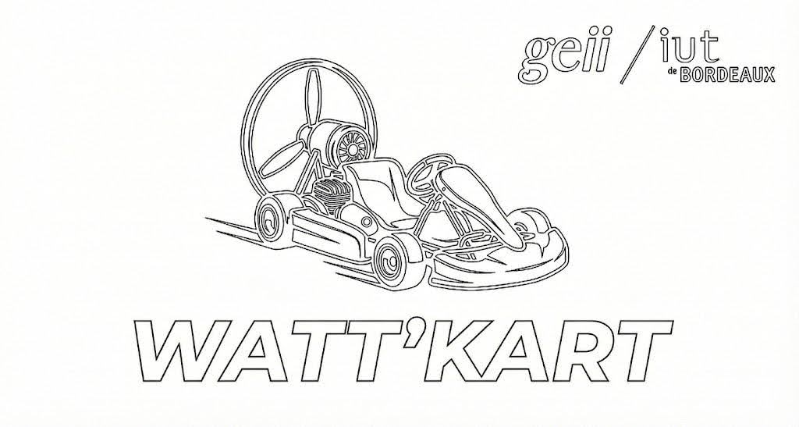

Présentation générale
Le projet KAH (Kart À Hélice) est une SAE réalisée par l'équipe 22. L'objectif : concevoir un système de pilotage infrarouge complet pour un kart propulsé par hélice. Le système se compose de deux parties indépendantes programmées sur Arduino.
L'émetteur (télécommande) lit en permanence deux potentiomètres (vitesse et direction) ainsi qu'un bouton klaxon, encode ces données dans une trame NEC infrarouge et les envoie toutes les 333 ms ou immédiatement à chaque changement.
Le récepteur, embarqué sur le kart, décode la trame NEC reçue, vérifie le numéro d'équipe, puis pilote le moteur brushless (propulsion), le servomoteur (direction) et le buzzer (klaxon). Une LED bleue confirme la réception d'une trame valide ; une LED verte signale que l'Arduino est sous tension.

Développement technique
Protocole NEC : La trame NEC transporte un octet d'adresse et un octet de données. L'adresse encode le klaxon (bit 7) et le numéro d'équipe sur 7 bits (0x22). Les données encodent la vitesse sur 3 bits (bits 2–0, valeurs 0–7) et la direction sur 5 bits (bits 7–3, valeurs 0–31).
Émetteur (KAH_EMTT_EQ22) : Deux potentiomètres (A0 = vitesse, A1 = direction) sont lus et mappés en 0–7 et 0–31. Un bouton poussoir (pin 2, pull-up interne) détecte le klaxon. La LED infrarouge (pin 5) émet la trame via la bibliothèque NEC. L'envoi a lieu toutes les 333 ms ou dès qu'une valeur change, pour un contrôle réactif.
Récepteur (KAH_RCPT_EQ22) : Le récepteur IR (pin 11) capte les trames. Après vérification du numéro d'équipe (0x16 dans ce binôme), la direction est convertie en angle servomoteur (0–180°) et la vitesse en signal PWM pour le moteur brushless (0–180). Le buzzer (pin 10) génère un signal carré à 4 kHz lors du klaxon. En cas de trame invalide, le moteur est stoppé et la LED bleue s'éteint.
Architecture logicielle
Le code est structuré en couches fonctionnelles distinctes pour chaque Arduino :
Émetteur : AcquerirPotentiometre() → AcquerirBoutonKlaxon() → CalculerDonneeNEC() + CalculerAdresseNEC() → GenererTrameNEC()
Récepteur : AcquerirTrameNEC() → Securite() + ExtraireNumeroEquipe() → CalculerDirectionServomoteur() + CalculerVitesseMoteur() + ExtraireEtatBuzzer() → PiloterServomoteur() + PiloterMoteur() + PiloterBuzzer()
Cette organisation — acquisition, traitement, action — garantit la lisibilité et facilite la maintenance du code embarqué.